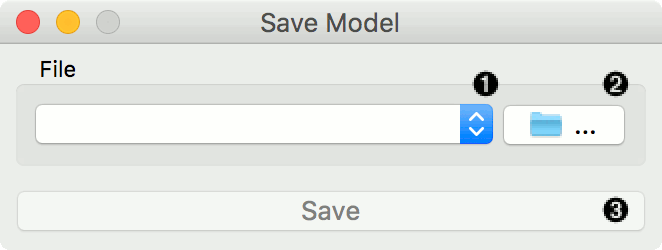
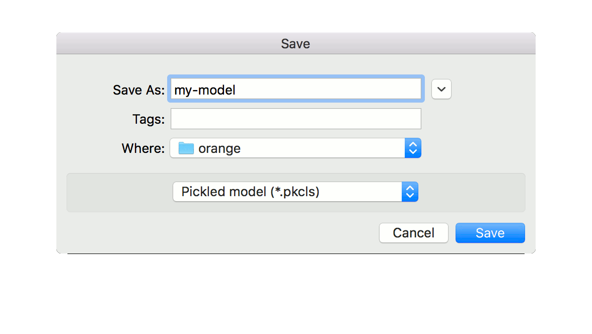
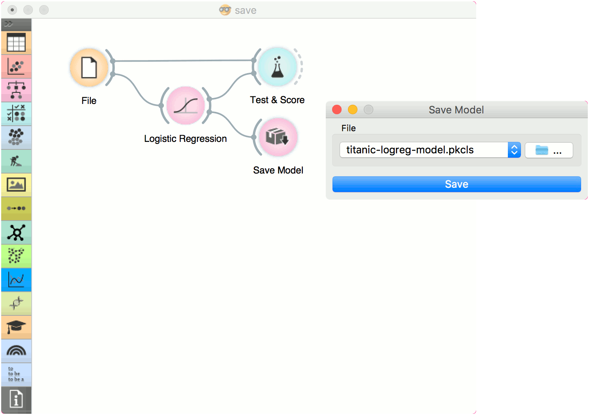

Save Model
Save a trained model to an output file.
If the file is saved to the same directory as the workflow or in the subtree of that directory, the widget remembers the relative path. Otherwise it will store an absolute path, but disable auto save for security reasons.
Inputs
- Model: trained model

- Choose from previously saved models.
- Save the created model with the Browse icon. Click on the icon and enter the name of the file. The model will be saved to a pickled file. 
- Save the model.
Example
When you want to save a custom-set model, feed the data to the model (e.g. Logistic Regression) and connect it to Save Model. Name the model; load it later into workflows with Load Model. Datasets used with Load Model have to contain compatible attributes.
